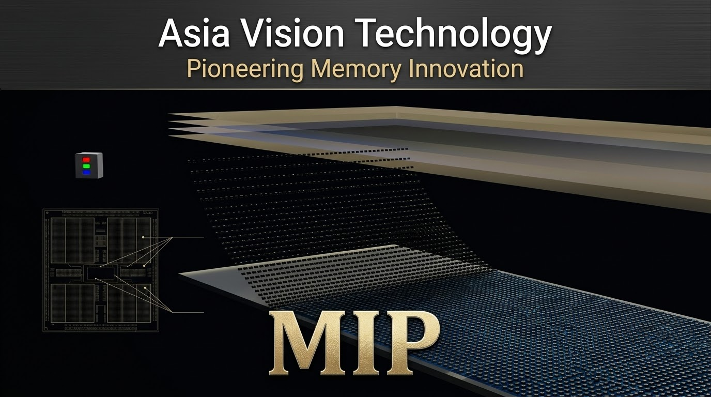
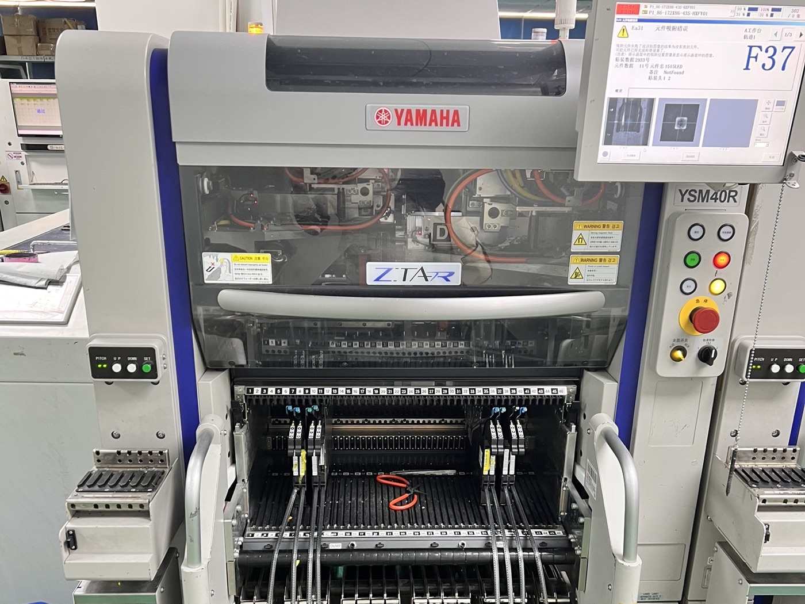
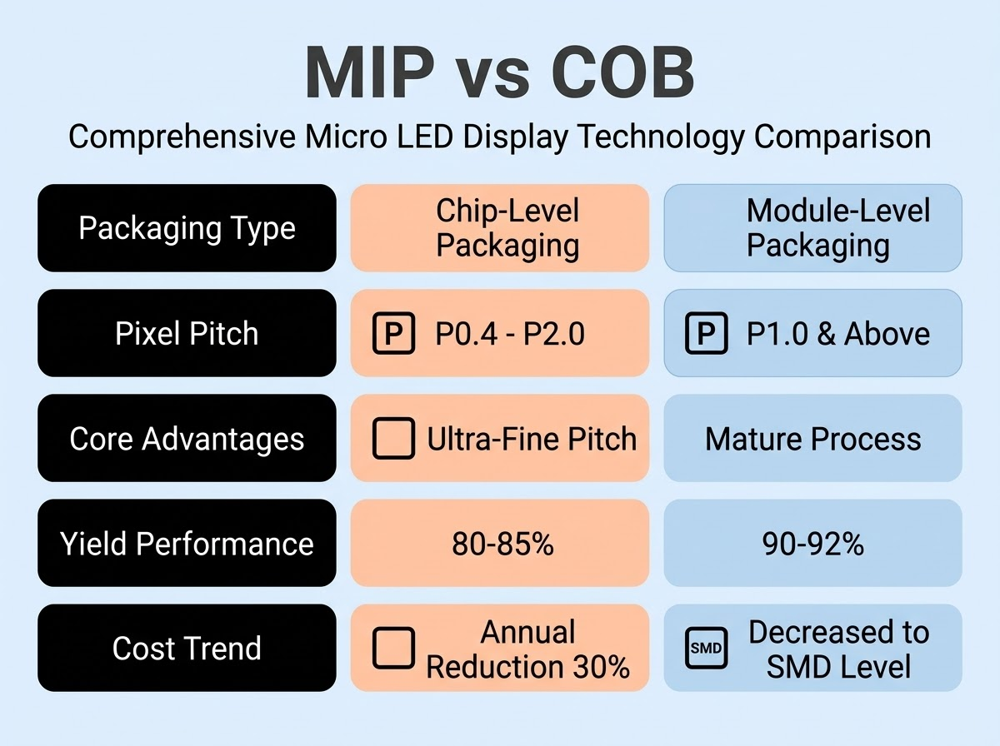
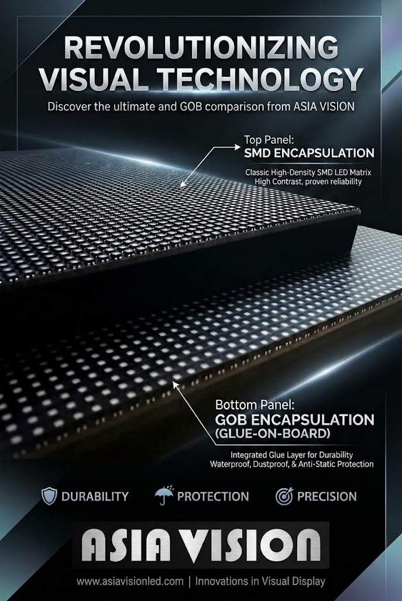

By David
Is MIP usable now? MIP led display packaging is real and shipping in selected fine-pitch products, but it is not yet a universal replacement for COB or SMD. Compared with COB, MIP offers a more flexible supply chain and easier repair, while COB still leads on cost and volume maturity at the same pitch. This guide explains where each process stands in 2026.
Packaging is the part of an LED display that sits between the LED chip and the viewer. It decides how the diodes are protected, how tightly they can be packed, and how the screen behaves over its life. For years the choice was simple: SMD for mainstream screens and COB for fine pitch. MIP is the newest option, and it is changing that picture.
This guide is written for technical buyers and integrators who are being offered MIP led display products and want to understand the process before comparing quotes. It covers what MIP is, how it differs from COB and SMD, where it is genuinely ready today, and where it is still developing.
MIP stands for Micro LED in Package. Instead of mounting bare LED chips directly onto the board, the LED is first sealed into a small package, and those packages are then placed onto a substrate. It sits between SMD, which mounts complete packaged LEDs in a classic plastic housing, and COB, which bonds bare chips straight onto the board and coats the whole surface.
The idea behind MIP is to keep the small pitch of COB while keeping the flexible, repairable, panel-by-panel assembly of SMD. Each LED is protected in its own package, so the diode is shielded before it reaches the board. That single difference in sequence is what separates MIP from COB in daily use.
| Aspect | SMD | COB | MIP |
|---|---|---|---|
| LED form | Packaged LED in plastic | Bare chip on board | Chip sealed in mini package |
| Mounting | Package soldered to PCB | Chip bonded directly | Package placed on board |
| Surface | Discrete lamps | Sealed, coated surface | Dense mini packages |
| Repair | Replace a single lamp | Harder, whole surface | Single package replaceable |
| Typical strength | Mature, low cost | Fine pitch, robust surface | Fine pitch with repairability |
| Maturity | Widely mass-produced | Widely mass-produced | Rising, pitch dependent |
MIP starts with the LED chip. The chip is sealed into a small package, often with a dark or black matrix that improves contrast, and the package is then assembled onto the module. Because the package is handled as a component, the board assembly uses established placement and reflow steps rather than the more specialised chip bonding that COB requires.

That step matters. COB demands tight control of the chip bonding and the coating, and a fault on the surface is harder to fix. MIP wraps a protective package around the LED first, which brings the later assembly closer to the SMD workflow. In principle this lowers the barrier to fine pitch and eases repair.
Against SMD, MIP's advantage is pitch. SMD lamps cannot be packed much tighter before the housing takes up too much of the surface, so SMD stops being sensible below a certain fine pitch. MIP removes much of that mechanical limit, so the process can reach tighter pitches while keeping a packaged, repairable LED.

Against COB, MIP's advantage is serviceability and supply chain flexibility. A COB surface is bonded and coated, so a single failed chip usually means a harder repair. MIP keeps every LED in its own package, so a package can be replaced. That suits buyers who value field service, although the trade-off is more parts and a different cost structure. For the older processes in detail, see our guide to COB vs SMD.
The honest answer is that maturity depends on the pitch. SMD and COB are fully established across the mainstream ranges, and COB has moved into fine pitch as a routine product. MIP is shipping, but it is concentrated in the fine-pitch segment, and the choice of packages and suppliers is narrower than for COB or SMD.
So MIP is not a technology you can order at every pitch from every supplier. It is real, it is in production for selected fine-pitch products, and it is expanding. A buyer should still treat any MIP quote as a question about the specific supplier and pitch, not as a blanket, mature, off-the-shelf option.
| Pitch segment | SMD | COB | MIP |
|---|---|---|---|
| Mainstream indoor and outdoor | Mature | Mature | Not the focus |
| Fine pitch | Limited | Mature | Rising |
| Micro pitch | Not practical | Established niche | Emerging |
The pattern is consistent: the finer the pitch, the more MIP appears, and the coarser the pitch, the less reason there is to use it. MIP is a fine-pitch answer, not a general replacement for the processes that came before it.
MIP is most interesting where a fine pitch meets a need for repair or for a flexible sourcing strategy. Control rooms, premium retail, studios, and high-end indoor applications are the natural fits, because they combine a tight pitch with a real cost of downtime.
It makes less sense where the pitch is coarse, where the budget is tight, or where service access is easy and the screen rarely fails. In those cases the established COB and SMD options are usually the better value, because they are produced at volume and supported by a wider supply base.
Two questions separate a serious MIP offer from a thin one: is the package a stable, proven component, and is there a genuine service method? A fine pitch is only useful if the display can be kept working over its life, and a repairable package is the whole point of MIP.
Buyers should also ask about the surface treatment and the contrast, because a fine-pitch screen lives or dies on how it handles ambient light and reflection. A dark matrix and a good surface finish matter as much as the pitch itself.
To be clear about our own position: Asia Vision does not build MIP products. Our production capacity is concentrated in SMD, GOB, and COB. We run 8 IC production lines and 7 LED SMT production lines, and our COB range at P0.93 has reached mass production capability, which is where most fine-pitch demand is still met today.

For buyers who want a fine-pitch screen now, our COB CV Pro series and our fine-pitch COB options are the practical route, backed by our own cabinet customisation, ageing tests, QC, and export delivery, all on our own production lines. If your project genuinely needs MIP, we are glad to advise on the comparison, but our own lines are SMD, GOB, and COB.
Start with the pitch and the viewing distance, because those decide whether fine pitch matters at all. Then match the process to the application: SMD for mainstream, COB for fine pitch with a robust sealed surface, and MIP where fine pitch and repair flexibility are both important.
Then test the claims. Ask for the package design, the supply chain, the service method, and evidence of volume production rather than samples. A process that is still emerging deserves a harder look, not a softer one. The goal is to buy the right process for the job, not the newest label.
The first misconception is that MIP is the same as Micro LED. It is not. Micro LED refers to the LED chip itself; MIP is a packaging approach, and it can be applied to more than one chip technology. For the difference, see our Micro LED vs COB guide.
The second is that a newer process is automatically better. It is not; it is better only where it fits the pitch, the budget, and the service model. The third is that MIP has replaced COB. It has not, and it is not close to doing so across the mainstream ranges.
MIP led display packaging is a genuine new route in fine pitch, and it is shipping, but it is not yet a universal answer. COB and SMD remain the volume options, and MIP is a fine-pitch specialist that is still expanding.
Buyers who understand where each process stands can compare quotes honestly and avoid paying for a label they do not need. Tell us your pitch, your viewing distance, and your service expectations, and we will recommend the process and the product that fits, from our SMD, GOB, and COB range.
Tell us your pitch, viewing distance, and service needs, and we will recommend the right process and product from our SMD, GOB, and COB range.
Request Packaging AdviceChat on WhatsApp